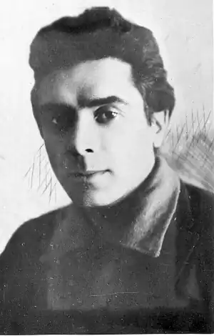
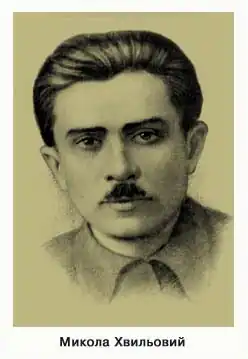
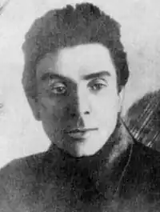
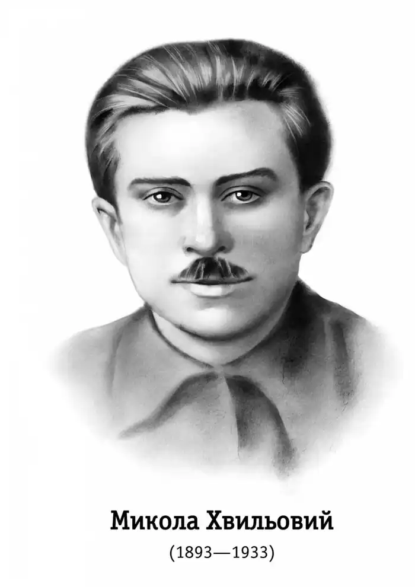
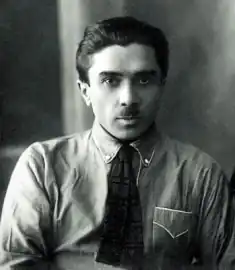
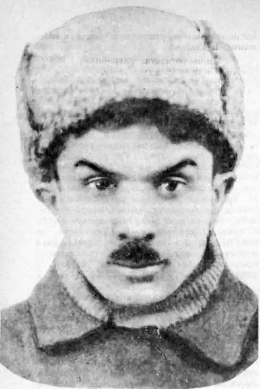

Микола Хвильовий
(1893 — 1933)
Неперевершений майстер малої прозової форми М. Хвильовий витворив у нашому письменстві власний стиль, своєрідний різновид лірико-романтичної, імпресіоністичної новели. На середину двадцятих років він став визнаним лідером цілого літературного покоління і був незмінним детонатором гострої критичної полеміки про шляхи розвитку пореволюційної української культури, зокрема започаткував знамениту літературну дискусію 1925 — 1928 pp. Народився М. Фітільов (справжнє прізвище письменника) 13 грудня 1893р. в селищі Тростянець на Харківщині (тепер Сумської області); навчався у початковій школі, в Богодухівській гімназії. Брав участь у першій світовій війні, саме в окопах, серед солдатської маси усталюються його демократичні, частково й більшовицькі симпатії. З 1921p. — він у столичному Харкові, де й дебютує як поет. Самобутній голос автора збірок "Молодість" і "Досвітні симфонії" не загубився в поетичному розмаїтті перших пореволюційних років. Та все ж за творчим обдарованням М. Хвильовий був прозаїком, він сам це скоро відчув і після виходу другої збірки до поезії звертався лише епізодично. Поява "Синіх етюдів" (1923) справила вибухове враження, вони були зустрінуті найавторитетнішими тогочасними критиками як явище значне й цілком новаторське. "З Хвильового безперечно цікава постать саме з художнього погляду: ще не вироблена, не вирізьблена, не докінчена навіть, але сильна", — писав С. Єфремов. О. Дорошкевич вважав, що збірка "Сині етюди" "придбала авторові славу першорядного письменника". О. Білецький у відомій статті "Про прозу взагалі та про нашу прозу 1925 року" назвав М. Хвильового "основоположником справжньої нової української прози". Новели прозаїка приваблювали не лише тематичною злободенністю, а й стильовою, мистецькою самобутністю, засвідчували утвердження нової манери письма. М. Хвильовий починав як неоромантик, хоча в новелістиці легко знайти і впливи імпресіоністичної поетики, і елементи експресіонізму, навіть сюрреалізму. Виражальність у його ранніх творах відчутно превалювала над зображальністю, це була проза музична, ритмізована, навіть незрідка алітерована, з дуже сильним ліричним струменем. Роль сюжету тут дуже незначна, композиція досить хаотична. Послаблення структурних зв'язків на композиційному рівні натомість зрівноважується ритмічною організацією тексту, введенням наскрізних лейтмотивів, виразних символічних деталей. Письменник був неперевершеним майстром у передачі безпосередніх вражень, миттєвих настроїв через предметну чи пейзажну деталь, через ланцюг асоціацій. Подальша еволюція письменника була непростою, й романтичний пафос поступово заступали викривально-сатиричні мотиви, на зміну захопленим гімнам революції приходив тверезий аналіз реальної дійсності, а відтак і нотки осіннього суму та безнадії. Щодо настроїв, авторських оцінок не була однорідною навіть і дебютна збірка. Вирізнялися у "Синіх етюдах" такі героїко-романтичні новели, як "Солонський Яр", "Легенда", "Кіт у чоботях". У цих ранніх творах, написаних 1921 — 1922 pp., ще помітні сліди учнівства. Герої-революціонери постають швидше як символічні узагальнення, ніж індивідуалізовані характери. Але М. Хвильовий був надто прозірливим і чесним митцем, щоб закривати очі на драматичну невідповідність між ідеалом і його реальним втіленням. Впродовж усього творчого шляху однією з найважливіших для нього була проблема розбіжності мрії і дійсності. А звідси у його новелах майже завжди два часові плани: непривабливе сьогодення, усі вади якого проступають дуже гостро, і протиставлене йому омріяне майбутнє або манливе минуле. Основним композиційним принципом таких новел, як "Синій листопад", "Арабески", "Сентиментальна історія", "Дорога й ластівка" (частково й "Повісті про санаторійну зону") є бінарне протиставлення сцен реальних і вимріяних, уяви й дійсності, романтичних злетів і прикрих приземлень. Своєрідним ключем для розкриття стильової магії М. Хвильового можна вважати новелу "Арабески" (1927). Основний композиційний принцип "Арабесок" — протиставлення уявних і реальних епізодів. Новелу можна прочитати як психологічний етюд, як спробу відображення самого творчого процесу, фіксації потоку свідомості митця, напівусвідомлених ідей та образів, "безшумних шумів моїх строкатих аналогій і асоціацій". Через авторську свідомість пропускаються картини дійсності, реальні епізоди: "Усе, що тут, на землі, загубилося в хаосі планетарного руху і тільки ледве-ледве блищить у свідомості", "і герої, і події, і пригоди, що їх зовсім не було, здається, ідуть і вже ніколи-ніколи не прийдуть". Одним із найважливіших у проясненні основної колізії "Арабесок" є сюрреалістичний епізод сну. Герой б'є й б'є огидного пацюка, але після кожного удару той лише збільшується в обсязі. Майстерно виписана алегорія пропонує різні прочитання. Можна її трактувати як застереження з приводу того, що спроби побороти зло за допомогою насильства й зла — приречені. Зло й насильство не породжує добро, а лише помножує зло на землі. Цей гіркий урок вимріяної романтиками й здійсненої фанатиками революції, результатами якої скористалася "світова сволоч", М. Хвильовий підсумовує недвозначно чітко. Це, загалом, та ж духовна колізія, навколо якої будується новела "Я (Романтика)". Намагання вбити в собі людину, вбити добро в ім'я фанатизму, в ім'я абстрактної ідеї, навіть якщо вона позірно видається найбільшою цінністю, призводять не до торжества ідеалу, а до переродження людини в дегенерата, до втрати нею самої своєї сутності. Відмова од традиційного описового реалізму увібрала для М. Хвильового й настанову на деструкцію художнього часу, характерну для модерної літератури відмову од послідовного викладу подій, намагання через найрізноманітніші часові зміщення, зіткнення віддалених епізодів, часових площин, введення історичних алюзій і асоціацій досягти посилених емоційних ефектів, змістового "згущення". Усі романтичні позитивні герої письменника живуть поза своїм часом, у мріях про ідеальне майбутнє або в спогадах про ідеальне минуле. Марить минулим редактор Карк, болісно прагнучи з'єднати розірвані історичні зв'язки ("Редактор Карк". "А я от: Запоріжжя, Хортиця. Навіщо було бунтувати? Я щоденно читаю голодні інформації з Запоріжжя. І я згадую тільки, що це була житниця"). Карка, цього сумного дон Кіхота (до речі, образ дон Кіхота — один з наскрізних, поряд із образом Фауста, у творчості Хвильового), жахає усвідомлення, що революція, якій офірували себе цілі покоління, нічого не змінила. Не знаходять себе у сірій буденній епосі Уляна, Б'янка ("Сентиментальна історія"), горбун Альоша ("Лілюлі"), в якого "очі нагадують Голгофу". Для всіх цих революційних романтиків теперішнього часу ніби й немає. Вони почуваються закинутими (в екзистенціалістському розумінні даного терміна) у це міжчасся, в цю потворну дійсність, де можна лише жертовно терпіти ("не героїчні будні, а героїчне терпіння — так визначає її Вероніка із "Силуетів"). Революційні романтики умоглядний задум — силою ощасливити світ — поставили над самоцінністю людської індивідуальності, відкинули традиційну мораль — і за цю абстрактну ілюзію закономірною платою був крах надій, відчуття спустошеності, коли замість гармонійної дійсності, яку вони хотіли вибороти, панували хаос і руїна. Виразне притчеве звучання має новела "Сентиментальна історія". Дещо ідеалізована героїня, чиста й наївна Б'янка, щиро захоплена революційними перетвореннями, в огні яких загинув її старший брат. Але швидко вона переконалася, "що прийшла якась нова дичавина і над нашою провінцією зашуміла модернізована тайга азіатщини". Новела може бути прочитана як життєпис втраченого покоління, трагічна історія безнадійних пошуків втраченого часу. У багатьох романтичних творах письменника звучить туга за цим втраченим часом, втраченим раєм — короткою миттю втіленого ідеалу. Це, у цілковитій згоді з романтичним світоглядом, період битви, збройного повстання, високого духовного пориву. Лише легендарні дні, коротку мить узгодження мрії та дійсності персонажі Хвильового вважають своїм, т е п е р і ш н і м часом, до якого постійно звернені їхні ностальгічні помисли. Що ж до надії, то її у міфологізованій світобудові прозаїка символізує Марія — людська і божа мати, материнське всепрощення й любов. Це вона з'являється перед внутрішнім зором комунара-чекіста у перших рядках новели "Я (Романтика)": "З далекого туману, з тихих озер загірної комуни шелестить шелест: то йде Марія". ..."воістину моя мати — втілений прообраз тієї надзвичайної Марії, що стоїть на гранях невідомих віків. Моя мати — наївність, тиха жура і добрість безмежна". Убивши матір, герой опиняється серед мертвого степу, а над "тихими озерами загірної комуни" зникає світле видиво Богоматері. Марія — центральний гуманістичний символ новели "Я (Романтика)". У цьому високотрагедійному творі, чи не найсильнішому у прозовому доробку письменника, автор безстрашно аналізує одну з основних колізій часу — колізію гуманізму й фанатизму. Розкривається суперечність між одвічним ідеалом любові й тим беззастережним служінням абстрактній ідеї, доктрині, яке, мов ненаситний молох, зрештою вимагає зректися всього людського. У трактуванні основного конфлікту твору помітний, зокрема, вплив антропософських ідей. Важливим у художній концепції новели є і розвінчування фальшивої романтики, яка заступає собою традиційні етичні цінності. Заполоненого сумнівами героя-чекіста, "главковерха чорного трибуналу комуни", М. Хвильовий ставить в екстремальну ситуацію неминучого вибору. Роздвоєне єство Я-оповідача розкривається в його внутрішніх монологах, у повсякчасних спробах самовиправдання. У непримиренній суперечності зіткнулися найсвятіші для героя почуття: синівська любов, синівський обов'язок перед матір'ю — і революційний обов'язок, служіння найдорожчій ідеї. Він ще пробує якось відстрочити фатальне рішення ("я чекіст, але я і людина"), та весь попередній шлях моральних компромісів робить розв'язку неминучою. Герой перестає бути особистістю, яка сама розпоряджається власним життям і власними рішеннями, він стає гвинтиком і заложником могутньої системи. Навіть у синівському праві в останню годину "з матір'ю побуть на самоті" героєві вже відмовлено.